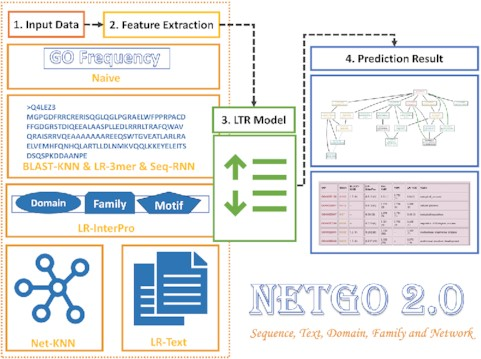

Ash Yao
One must imagine Sisyphus happy.
A student who is ready to start anew. And a programmer who is open to all possibilities.
LivCity Room 407
3-30-30 Nishiwaseda, Shinjuku-ku
169-0051 Tokyo, Japan
3-30-30 Nishiwaseda, Shinjuku-ku
169-0051 Tokyo, Japan
Bio
I am a software engineer with a master’s degree in computer software and theory from Fudan University. During my graduate studies, I developed a large-scale protein function prediction web service called NetGO 2.0. Related paper was published in NAR.
After graduation, I worked as a silicon design engineer at AMD Shanghai for a year, where I developed and maintained a web regression test system for GPU functionality testing. Currently, I am studying Japanese at Kyoshin Language Academy in Japan.
Inspired by Arendt, I have always wanted to create new things for the world through action. Since my student days, I have been actively involved in social welfare activities, and now, I hope to continue my action in Japan.
Recent News
- 2022/10 I came to Japan and enrolled in Kyoshin Language Academy Shinjuku School to study Japanese.
- 2022/03 Due to Shanghai’s Zero-COVID policy, I was locked down at home and decided to leave China and go to Japan after the lockdown was lifted.
- 2021/07 I joined AMD GCP Group as a Silicon Design Engineer. The company had a vibrant atmosphere and friendly colleagues.
- 2021/06 I successfully graduated from Fudan University with a master’s degree in Computer Software and Theory.
- 2021/05 Congratulations! Our paper NetGO 2.0: Improving Large-scale Protein Function Prediction with Massive Sequence, Text, Domain/family and Network Information was accepted by Nucleic Acids Research(NAR).
Other Platforms
- GitHub: https://github.com/AshYao
- LinkedIn: https://www.linkedin.com/in/shuwei-yao-1435a5262/
- Google Scholar: https://scholar.google.com/citations?user=78FtZW8AAAAJ
Publications

Yao S.,
You R.,
Wang S.
et al.
NetGO 2.0: Improving Large-scale Protein Function Prediction with Massive Sequence, Text, Domain/family and Network Information
NetGO 2.0: Improving Large-scale Protein Function Prediction with Massive Sequence, Text, Domain/family and Network Information
In
Nucleic Acids Research,
2021.
With the explosive growth of protein sequences, large-scale automated protein function prediction (AFP) is becoming challenging. A protein is usually associated with dozens of gene ontology (GO) terms. Therefore, AFP is regarded as a problem of large-scale multi-label classification. Under the learning to rank (LTR) framework, our previous NetGO tool integrated massive networks and multi-type information about protein sequences to achieve good performance by dealing with all possible GO terms (>44 000). In this work, we propose the updated version as NetGO 2.0, which further improves the performance of large-scale AFP.
Cite NetGO 2.0: Improving Large-scale Protein Function Prediction with Massive Sequence, Text, Domain/family and Network Information
@article{yao2021netgo, title={NetGO 2.0: improving large-scale protein function prediction with massive sequence, text, domain, family and network information}, author={Yao, Shuwei and You, Ronghui and Wang, Shaojun and Xiong, Yi and Huang, Xiaodi and Zhu, Shanfeng}, journal={Nucleic acids research}, volume={49}, number={W1}, pages={W469--W475}, year={2021}, publisher={Oxford University Press} }